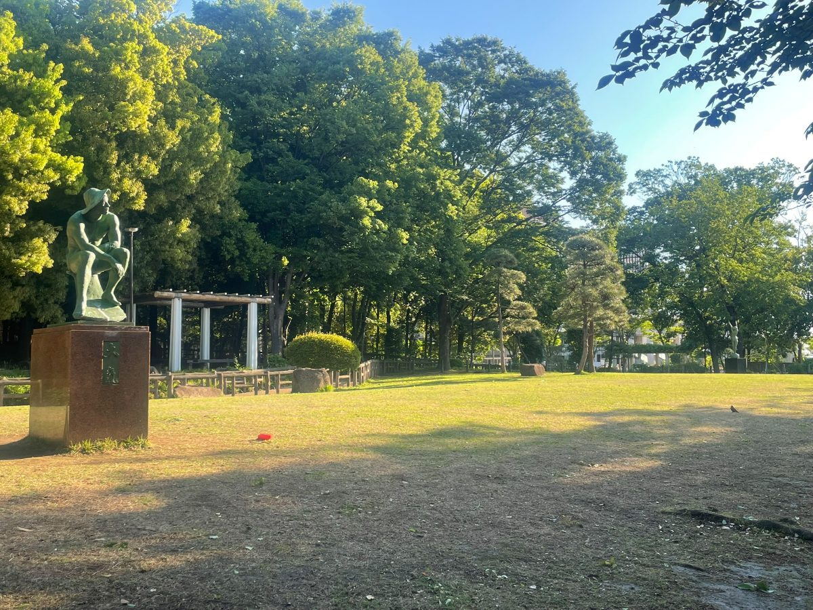
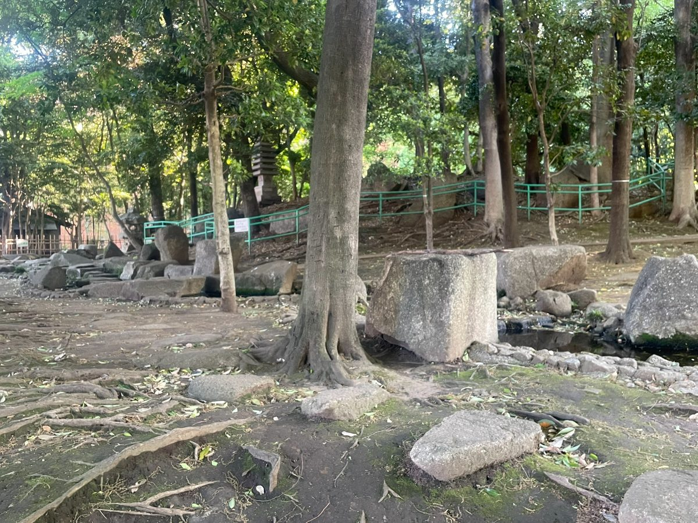
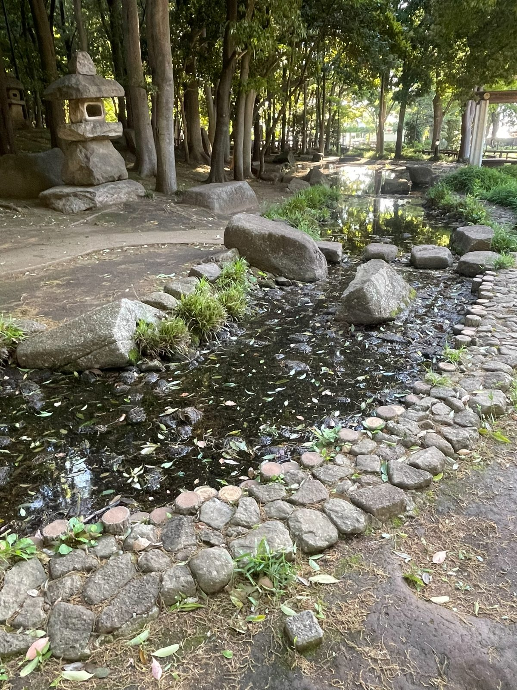
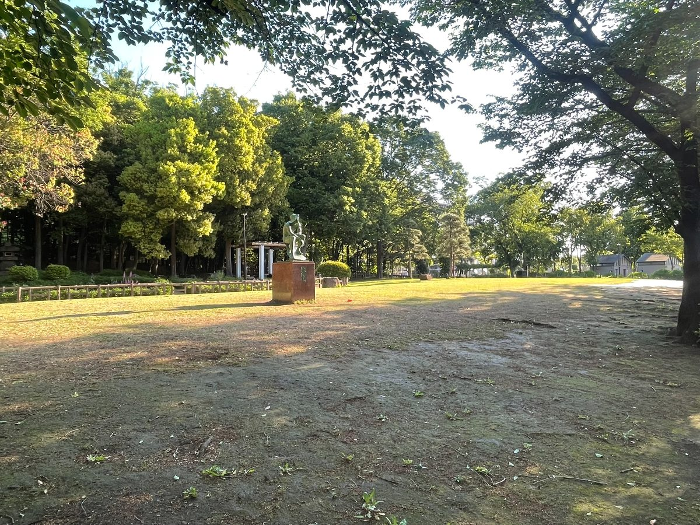
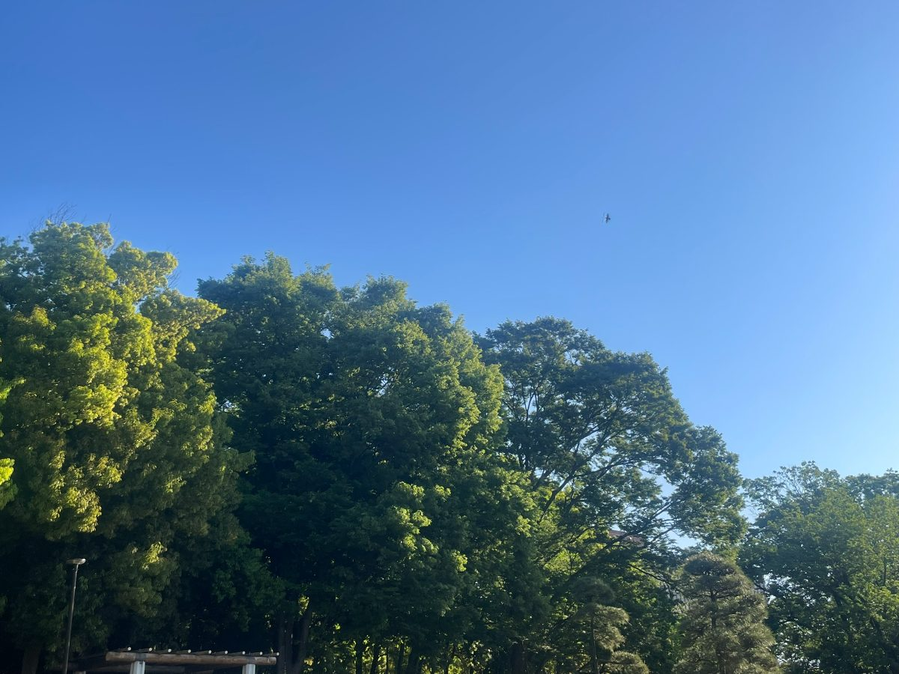
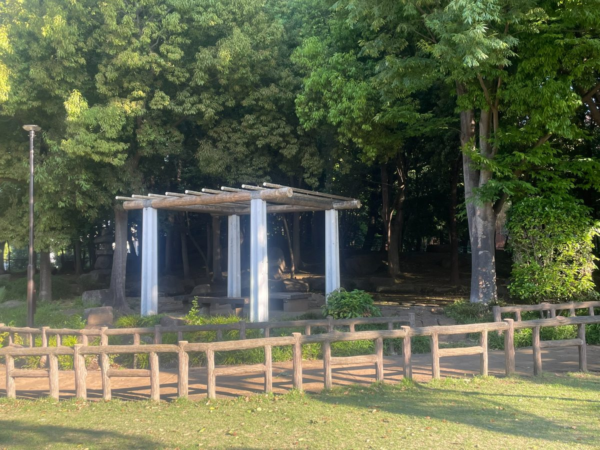
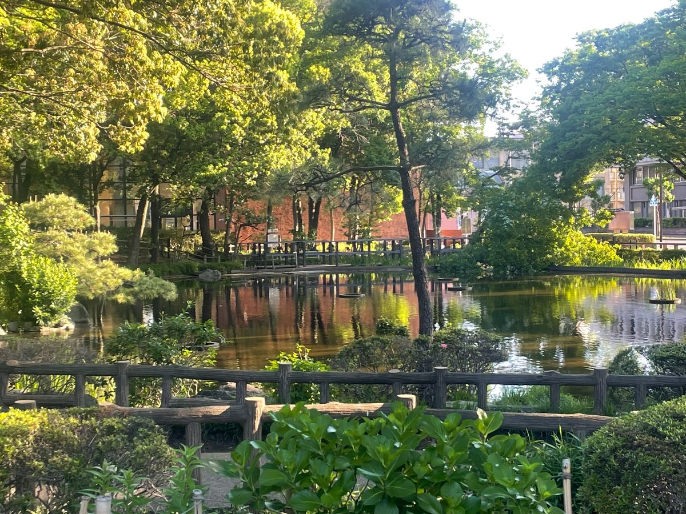

戸田・新曽エリア
後谷公園
戸田市上戸田4-8-1
✨ この公園の特徴
- 石灯籠と小川が織りなす日本庭園風の景観
- 緑の銅像モニュメントと広々とした芝生広場
- 木陰の屋根付き休憩スペースとベンチが充実
📷 写真







✕
🎪 設備・施設
🚻 トイレ
🚗 駐車場
💧 水遊び
🪑 ベンチ
⛹ ボール遊びOK
🌳 日陰あり
🎠 ブランコ
🛝 すべり台
🏖 砂場
🐕 ドッグラン
🏗 複合遊具
🏋 健康器具
🌳 公園について
後谷公園は、広々と空間の中にある石灯籠や小川、飛び石が配された日本庭園風のエリアが魅力の自然豊かな公園です。せせらぎの音を聞きながらゆったりと散策でき、日常の喧騒を忘れてリラックスできる空間が広がっています。
広々とした芝生広場には緑青色の彫刻モニュメントが設置されており、子どもたちが自由に走り回れる開放的なスペースが確保されています。木立に囲まれた落ち着いた雰囲気の中で、ピクニックや外遊びを楽しむ家族連れにも最適です。
丸太屋根の木陰の休憩スペースや、反射する水面が美しい池など、園内は見どころが豊富です。戸田市にあってこれだけ自然を感じられる公園は貴重で、子育て世代の憩いの場として幅広い世代に親しまれています。
🗺 アクセス
ℹ️ 基本情報
| 公園名 | 後谷公園 |
| 住所 | 埼玉県戸田市上戸田4-8-1 |
| エリア | 戸田・新曽エリア |